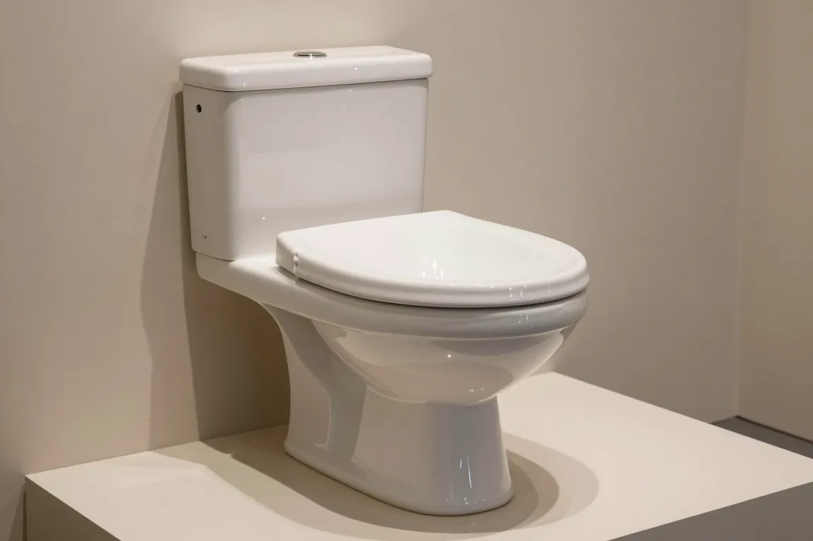

keramikk · 1994 to now · også: Designer-baderomskeramikk, Veggmontert toalett og vask, Arkitektonisk sanitærporselen
Sanitærporselen som en kjent designer former som en ren gjenstand. Et toalett henger på veggen, sisternen skjules i veggen, og en vask står på benken som en tynn, skarp skål.

Kjerneidé
Et baderomsarmatur er en designet gjenstand, så keramikken har en klar, enkel form som svever over gulvet.
Designprinsipper
Heng toalettet på veggen i 400 mm setehøyde, og la gulvet være fritt under det.
Skjul sisternen i en stålramme inne i veggen, med en plate med 2 knapper.
Form skålen som en klar geometrisk form: en oval, en sirkel eller en avrundet firkant.
Lag en benkvask med en vegg på 6 til 10 mm og en rett, skarp kant.
Bruk én hvit glasur, eller en satinglasur i noen få stille farger.
Hold skålen uten kant, slik at innsiden er lett å rengjøre.
Tilpass formene på toalettet, vasken og bidéen i én familie.